Automating the migration from SAS® Macro to PROC LUA using transpiling
Igor Khorlo
SAS User Group Germany meetup #3
23rd January 2019 📍 Berlin
What is Lua?
- Introduced in SAS 9.4M3
- Lua is a lightweight scripting language designed primarily for embedded use in applications. Written in C.
- Comparing to alternatives (like PROC GROOVY) has much less overhead and is easier to use.
ERROR: SUBMIT block:2: attempt to call a table value
stack traceback:
SUBMIT block:2: in function 'iterate'
SUBMIT block:9: in function 'times'
SUBMIT block:13: in main chunk
ERROR: There was an error submitting the provided code
NOTE: The SAS System stopped processing this step because of errors.ERROR: An unexpected semicolon occurred in the %DO statement. A dummy macro will be compiled.Lua vs SAS Macro performance
Intro
- Visual performance overview using Enterprise Session Monitor (ESM) for SAS — software by Boemska
- Performance monitoring can be also obtained in SAS with Application Response Measurement (ARM)
For loop
For loop (n=1e7)
%do i = 1 %to &n;
%put &i;
%end;for i = 1, n do
print(i)
endFor loop – overview
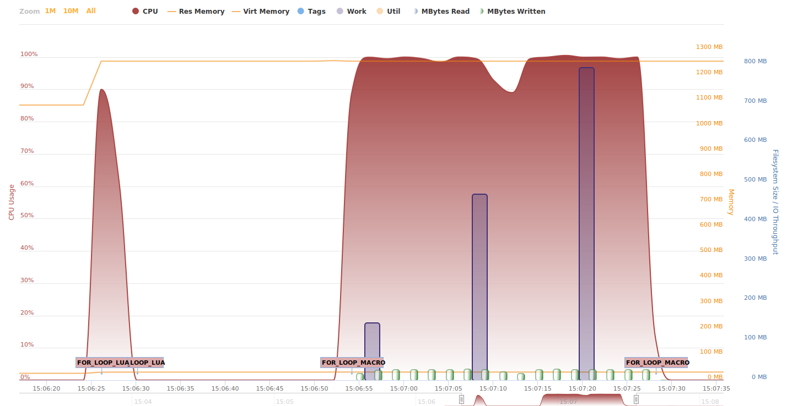
For loop – Lua
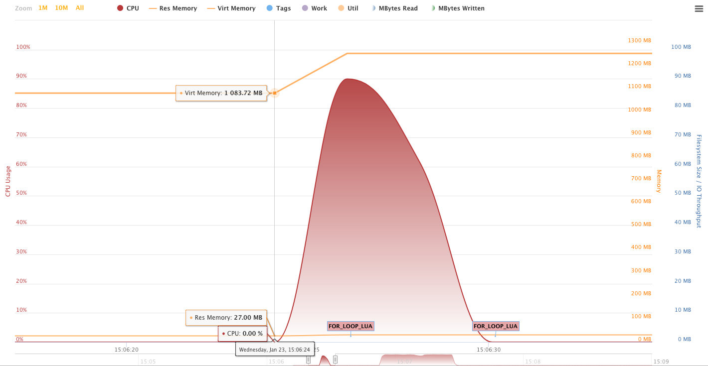
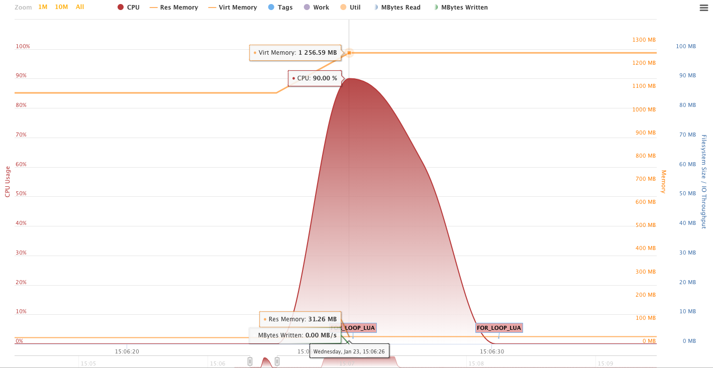
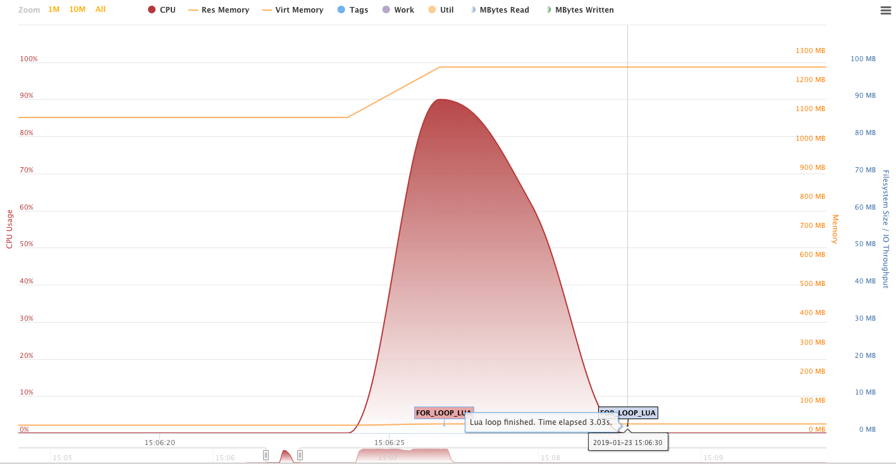
For loop – SAS Macro
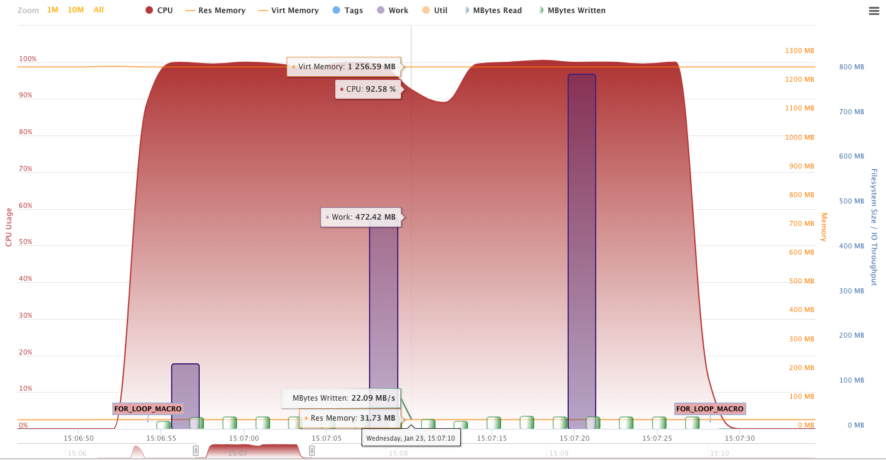
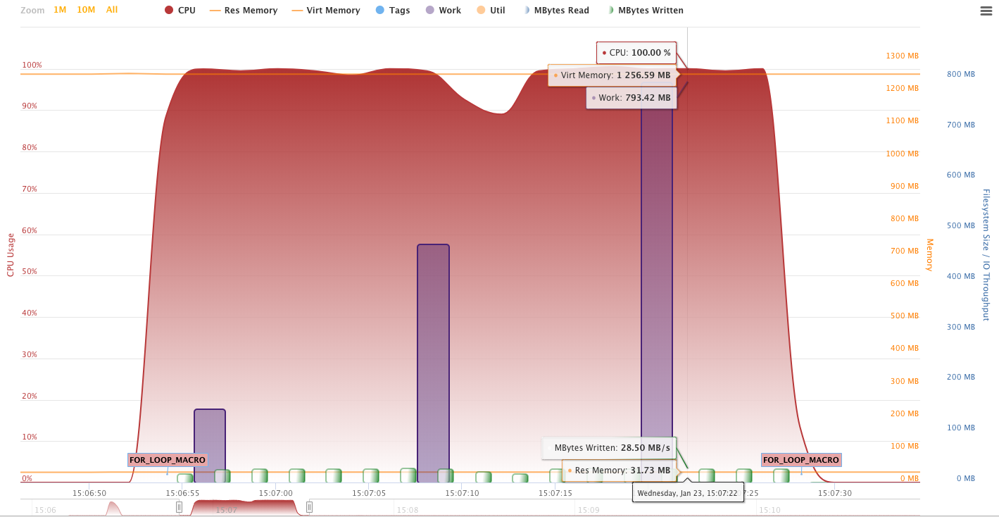
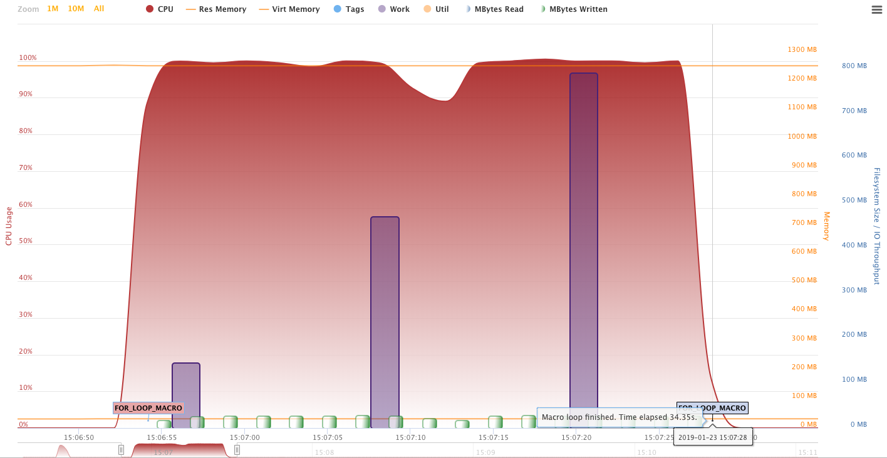
Utility files in WORK
$ ls -al
-rw-r--r-- 1 sasdemo 88039424 Oct 20 19:57 #tf0024.sas7butl
drwx------ 2 sasdemo 1024 Oct 20 19:57 .
drwx------ 3 sasdemo 96 Oct 20 19:56 ..
-rw-r--r-- 1 sasdemo 12288 Oct 20 19:57 sasmac1.sas7bcatIteration over a list
Iterating over a list (n=1e5)
%let list=George Paul Ringo John Foo Bar Baz Macro Polo;
%do i = 1 %to
%sysfunc(countw(&list));
%let item=%scan(&list, &i);
%put &item;
%end;list = {"George", "Paul", "Ringo", "John", "Foo", "Bar", "Baz", "Macro", "Polo"}
for _, i in ipairs(list) do
print(i)
endIterating over a list
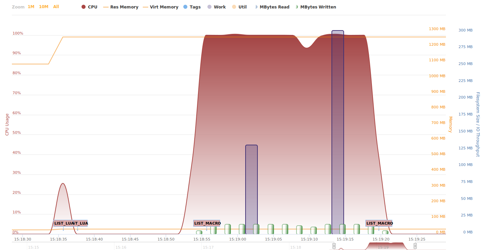
Iterating over a list – Lua
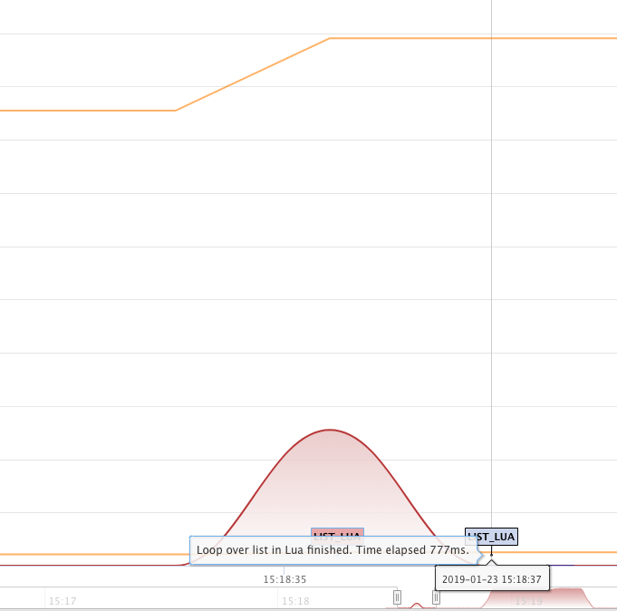
Iterating over a list – SAS Macro
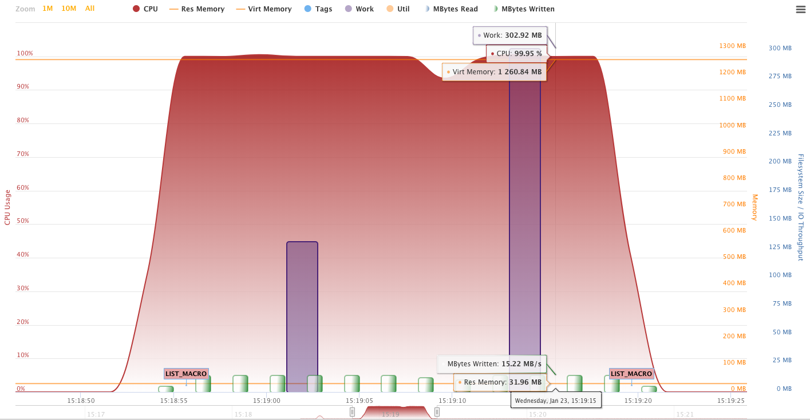
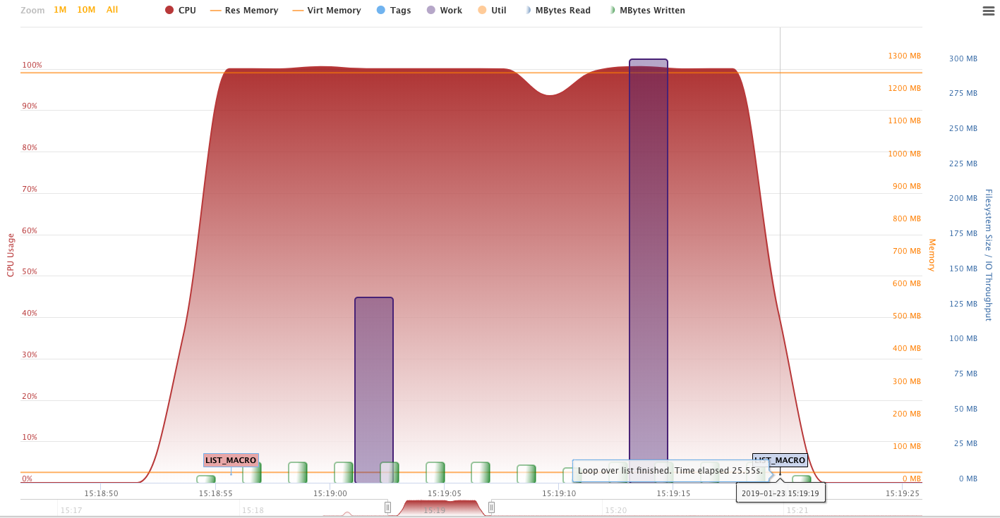
Reading a dataset
Reading a dataset (1900000 observations, 73mb, 5 variables)
data class(drop=i);
set sashelp.class;
do i = 1 to 100000;
output;
end;
drop i;
run;Reading a dataset – SAS Macro code
%let dsid = %sysfunc(open(&indat));
%syscall set(dsid);
%let nobs = %sysfunc(attrn(&dsid, nlobs));
%do i=1 %to &nobs;
%let rc = %sysfunc(fetchobs(&dsid, &i));
%end;
%let rc = %sysfunc(close(&dsid));Reading a dataset – Lua code
Reading a dataset – overview
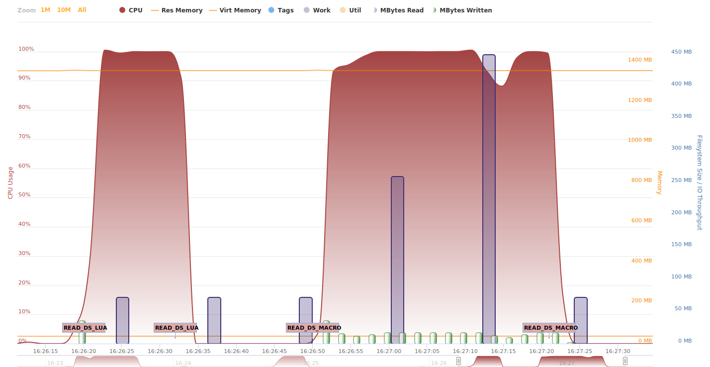
Migration
Transpilers
- PROC DSTODS2 in SAS
- DATA Step is a SAS to C transpiler
- Typescript to Javascript
- C++ was a transpiler to C at the early development
SAS Macro to Lua tranpiler
/* mf_existds.sas */
/* @number */
%macro mf_existds(libds);
%if %sysfunc(exist(&libds)) ne 1 &
%sysfunc(exist(&libds,VIEW)) ne 1 %then 0;
%else 1;
%mend;
%put {%mf_existds(sashelp.class)};Lua equivalent
ANTLR
Demo
Tree traversal
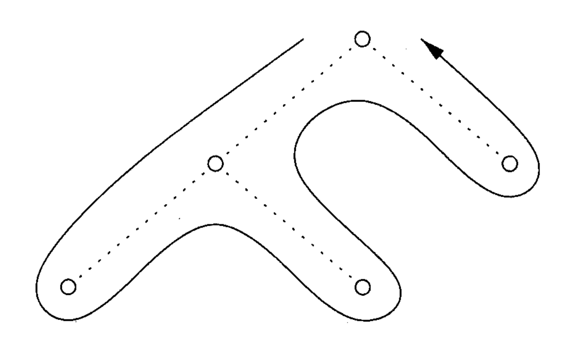
Sasensei quizz (Lua, SAS Macro, regex questions)